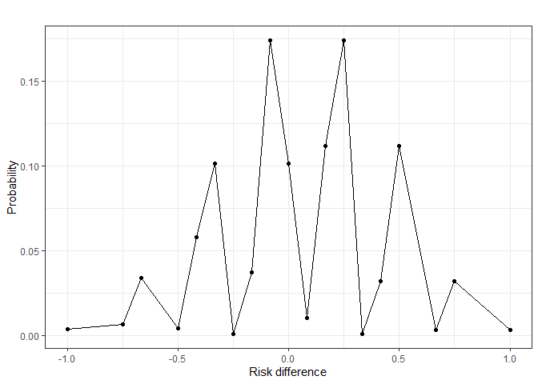
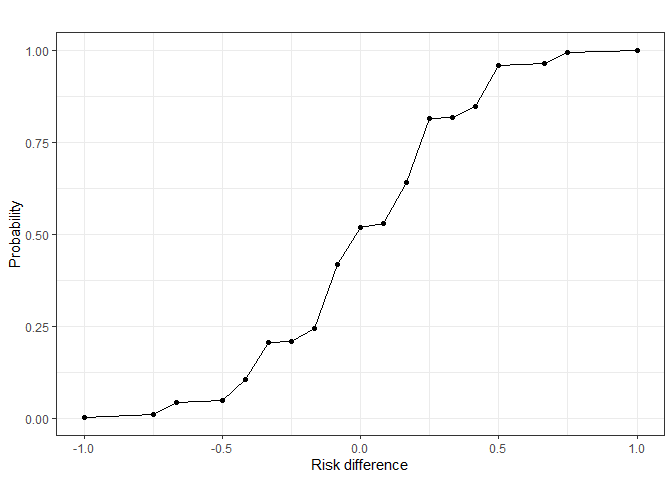

Risk differences are frequently used to compare two treatment groups with respect to a binary endpoint in clinical trials. This implies the comparison of two underlying binomial distributions. As opposed to the sum of two (independent) binomial distributions, the difference between two binomial distributions does not generally follow a binomial distribution. Oftentimes, a normal approximation is used for the risk difference, which may be inappropriate for small sample sizes. Furthermore, formulating rejection regions based on the normal approximation insinuates that the risk difference follows a continuous distribution, while for a specific trial scenario, it is a discrete random variable. The riskdiff package aims to provide insights into the exact distribution for risk differences. All calculations are based on the observation that the risk difference of a specific trial has a finite number of possible outcomes, for each of which a corresponding probability can be calculated.
Installation
You can install the development version of riskdiff from GitHub with:
# install.packages("devtools")
devtools::install_github("morten-dreher/riskdiff")Example
Presume we are interested in increasing the occurrence of a binary outcome (e.g., disease remission). For this example, we use very small sample sizes to keep the output brief. We make the assumptions: remission rate in treatment group , remission rate in control group , sample size of treatment group and sample size of control group .
library(riskdiff)
# First, fix a trial scenario ----
## Assumed outcome probabilities ----
piTreatment <- 0.3
piControl <- 0.25
## Assumed group sizes ----
nTreatment <- 4
nControl <- 3Now, we can calculate the density of the risk difference distribution using driskdiff().
# Calculate
riskdiff_density <- riskdiff::driskdiff(
piTreatment = piTreatment,
piControl = piControl,
nTreatment = nTreatment,
nControl = nControl
)
# Tease results
head(riskdiff_density)
#> Risk difference Probability
#> 1 -1.0000000 0.003751563
#> 2 -0.7500000 0.006431250
#> 3 -0.6666667 0.033764062
#> 4 -0.5000000 0.004134375
#> 5 -0.4166667 0.057881250
#> 6 -0.3333333 0.101292187The output of driskdiff() is a data.frame with the two columns Risk difference and Probability, the former representing the value of the risk difference and the latter its probability of occurring given the trial setting. Note that the possible risk differences only depend on the group sizes, not the individual success probabilities of the groups.
The density can be plotted by providing riskdiff_density to plotriskdiff():
riskdiff_density |> plotriskdiff()
As an analogue to driskdiff(), the function priskdiff() is available for the cumulative probability function with the same syntax:
riskdiff::priskdiff(
piTreatment = piTreatment,
piControl = piControl,
nTreatment = nTreatment,
nControl = nControl
) |> riskdiff::plotriskdiff()
Both plots hint at a very sporadic and oddly shaped distribution of the risk difference.
Further discussion on these results and an intuitive justification of the approach implemented in riskdiff is provided in the package vignettes.